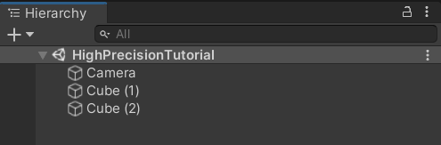
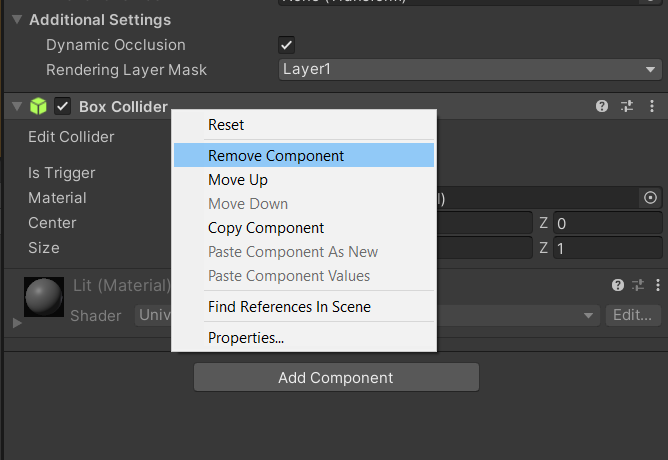

Getting Started
This getting started guide will show you how to position GameObjects using the
high-precision framework.
1. Install the Package
First and foremost, install the high-precision framework package using the installation instructions. Once you have completed these steps, you will have a new or existing Unity project with the high-precision framework installed.
2. Create a New Scene
Create a new scene in your project. This process can also be used to convert an
existing scene. However, we recommend getting an understanding of the
high-precision framework before doing so. In this scene, add two cube GameObjects
and a camera which we will later position within a high-precision environment.

3. Remove Colliders
Unfortunately, as of today, the high-precision framework does not work with the physics engine and can only be used for visualization purposes. For this reason, we will need to remove the colliders from both cube objects.

4. Add High-Precision Components
Organize the scene using high-precision components.
- Create the high-precision Root
- Add an empty
GameObjectand call it HPRoot - Add an
HPRootcomponent
- Add an empty
- Create a high-precision camera
- Add an
HPTransformto the camera object - Make the camera object a child of the
HPRoot
- Add an
- Create high-precision meshes
- Add an
HPTransformto each of the cubes - Make both cubes children of the
HPRoot
- Add an
5. Select a Rebasing Strategy
The high-precision framework relies on a rebasing strategy to optimize the position of the GameObjects within the scene. The high-precision framework doesn't perform any magic, it only positions objects in a double-precision universe space to then translate them into Unity's world space where it is rendered using single-precision floating-point numbers. The rebasing strategy defines how the universe-space gets translated into world space.
The high-precision framework comes with a LocalCoordinateSystem script which
allows us to defined one of our high-precision objects as the object, in universe
space, which will always remain very close to the center of our world space.
Add this script to the HPRoot object and link the Origin object to the
camera.
Note: This script is an example of a simple rebasing strategy. The high-precision framework is designed such that any rebasing strategy can be implemented in a similar fashion. Use this script as an example.
6. High-Precision Scripting
In order to take advantage of the high-precision framework, you will need to write
scripts which position GameObjects within the universe space. To do so, you will
need to start using the HPTransform's API. When using the high-precision
framework, you should no longer be using the default Transform's API. With this
setup, you only need to worry about the position of the objects within the
universe. The high-precision framework, combined with the selected rebasing script
will take care of positioning the objects within world-space for you.